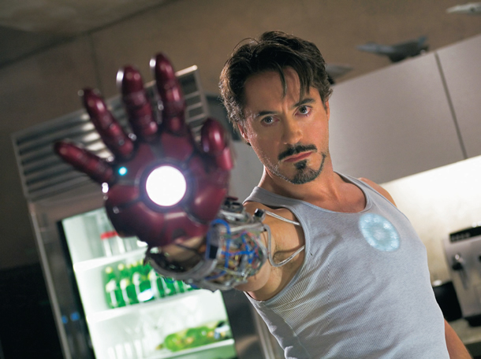
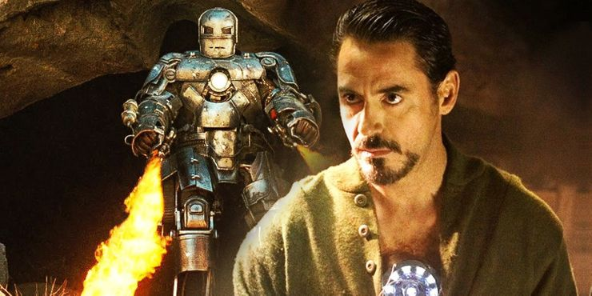
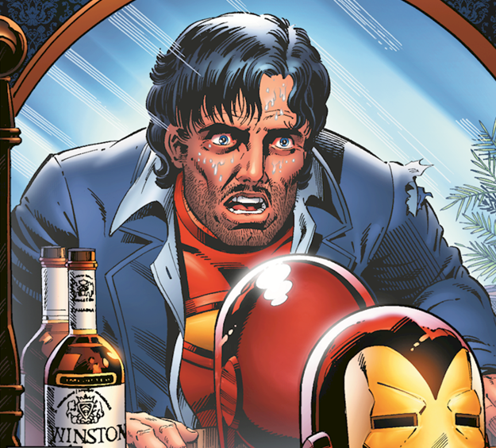

Homem de Ferro (Iron Man)
Homem de Ferro (Iron Man, em inglês) é um personagem fictício dos quadrinhos publicados pela Marvel Comics. Sua identidade verdadeira é a do empresário e bilionário, Tony Stark, que usa armaduras de alta tecnologia no combate ao crime. Foi criado em 1963 pelo escritor Stan Lee, o roteirista Larry Lieber, e os desenhistas Jack Kirby e Don Heck. O objetivo de seu criador, Stan Lee, era aceitar o desafio de fazer um personagem ser odiado e depois amado pelo público, assim, criou um dos super heróis mais marcantes de todos os tempos. A primeira publicação foi em Tales of Suspense #39 (história publicada pela primeira vez no Brasil em Heróis da TV #100). Desde então se tornou um dos personagens mais conhecidos da Marvel, como membro dos Vingadores e adaptações para desenhos animados e cinema (no qual foi interpretado por Robert Downey, Jr.). Seguindo a cronologia dos filmes, o Homem de Ferro surgiu em 2008, onde Tony Stark, interpretado por Robert Downey Jr., teve papéis decisivos em todos os filmes seguintes até a sua morte em Guerra Infinita (2019), um dos maiores sucessos de bilheteria da história do cinema. Além de ser mais conhecido como Homem de Ferro, é, segundo ele mesmo, “um gênio, bilionário, playboy e filantropo”.

Quem é Tony Stark?
Antony Edward "Tony" Stark é filho de Howard Stark e Maria Stark, nasceu no dia 01 de Março de 1963 em Long Island, Nova York, Estados Unidos. O garoto era um prodígio desde a infância, tendo uma relação difícil com o pai quando este estava alcoolizado, problema que Tony teve de enfrentar mais para frente. Ainda que não seja algo presente nos filmes, é um fato importante nos quadrinhos. Aos seis anos de idade Tony acabou sendo enviado para um internato. Em meio a estudantes do ensino médio, Tony acabou se destacando como gênio prodígio. Formou-se em engenharia elétrica e física no MIT (Massachusetts Institute of Technology) quando tinha apenas 15 anos. Enquanto estudava, também conheceu outro jovem gênio: Bruce Banner. Ao longo da vida, Tony e Bruce desenvolveram uma grande rivalidade científica. Aos 20 anos, Tony acabou se voltando para uma vida ociosa e nômade. Depois de se envolver com mulheres ligadas aos rivais de seu pai, Tony foi proibido de se relacionar e decidiu passar a curtir a vida viajando o mundo. Porém, aos 21 anos, com a morte de seus pais em um acidente de carro, herdou as Indústrias Stark, um complexo industrial-militar especializado em armas avançadas com contratos com o governo americano. Com poucos anos de trabalho, Tony transformou a empresa num gigante complexo bilionário.
A primeira armadura de Ferro
Nas Indústrias Stark, Tony trabalhava principalmente com investimento em armamento e munições, ele acabou fazendo parte de uma apresentação no Vietnã. Durante o conflito militar no país, Tony acabou sendo vítima de um ataque de granada, mas sobreviveu. Apesar disso, ficou com estilhaços de explosivo próximos ao seu coração. Ao mesmo tempo, ele fora feito prisioneiro e forçado a desenvolver uma arma. Mas, ao invés de desenvolver a arma para seu sequestrador, Tony acabou criando um dispositivo que o mantivesse vivo. Logo após garantir sua sobrevivência, também criou a primeira versão da armadura do Homem de Ferro e escapou. Desde então, Tony aperfeiçoou e desenvolveu novas versões da armadura, sempre com destaque para cores vermelho e dourado. Durante o início de suas aventuras, Tony Stark dizia que o Homem de Ferro era seu guarda-costas. Na época, apenas sua secretária, Virginia “Pepper” Potts, e Harold “Happy” Hogan conheciam seu segredo.
O alcoolismo
As Indústrias Stark acabaram entrando em falência por influência de Obadiah Stane (criador do Monge de Ferro). A crise financeira levou Stark a um período de alcoolismo e instabilidade emocional. Durante essa fase, ele chegou a agredir Pepper e a ser preso várias vezes. Por causa disso, ele acabou deixando de lado a armadura do Homem de Ferro e a ofereceu para o ex-militar James Rhodes. No entanto, a armadura deixava Rhodes cada vez mais agressivo, pois estava calibrada para agir em união com a mente de Tony. A partir daí, ele decidiu destruir todos os trajes inspirados no original, mas isso não impediu que sua própria saúde estivesse sendo destruída. A influência da máquina estava destruindo seu sistema nervoso. Isso, somado a um tiro que sofreu, fez com que ele ficasse paraplégico. Dessa maneira, Stark decidiu produzir a armadura Máquina de Combate, que podia ser controlada à distância. A armadura acabou ficando com Rhodes, depois que Tony se recuperou da paraplegia com a ajuda de um biochip.
Armaduras
Seu traje possui vários aspectos tecnológicos. A armadura é a testemunha da genialidade de seu criador Tony Stark. A parte interior é revestida de titânio com ouro, sendo enriquecida por um campo magnético. Geralmente, ela é guardada dentro da sala executiva de Stark, num compartimento secreto. Possui diversos equipamentos como um sofisticado sistema de navegação, o Jarvis, sensores e scaners diversos, sistemas de projeção de imagens holográficos, sonar, flaps, lasers, pequenos projeteis (teleguiados ou não), emissores de pulso eletromagnéticos, disruptor sônico, um escudo de energia defensiva que pode ser estendido até 360 graus, entre muitos outros apetrechos.
Evolução da armadura
A armadura era baseada na então recente tecnologia dos transístores, que as vezes eram chamados de "transístores miniaturizados". A principal arma era chamada de "raio repulsor", expelido das palmas das mãos da armadura. Logo depois das primeiras histórias, Stan Lee ouviu opinião de alguns empregados da Marvel e resolveu tornar a aparência do herói mais agradável: mudou a cor da armadura para dourado, passando o Homem de Ferro a ser chamado durante algum tempo de O Vingador Dourado. As constantes inovações tecnológicas levaram o traje a ser sempre modificado em sua aparência. Dos transistores iniciais, ele agora se baseia em chips e nanotecnologia. Várias versões da armadura foram criadas para situações específicas, como uma versão espacial, e outras para fins de espionagem e atuações submarinas sob grande pressão. Houve duas bem específicas: uma gigante, usada para deter o Hulk; e outra confeccionada especificamente para funcionar com a energia de uma pedra Asgardiana. Em 2005, a armadura do Homem de Ferro já estava em sua 49ª versão, apesar de que muitas das versões anteriores apresentavam apenas pequenas alterações.